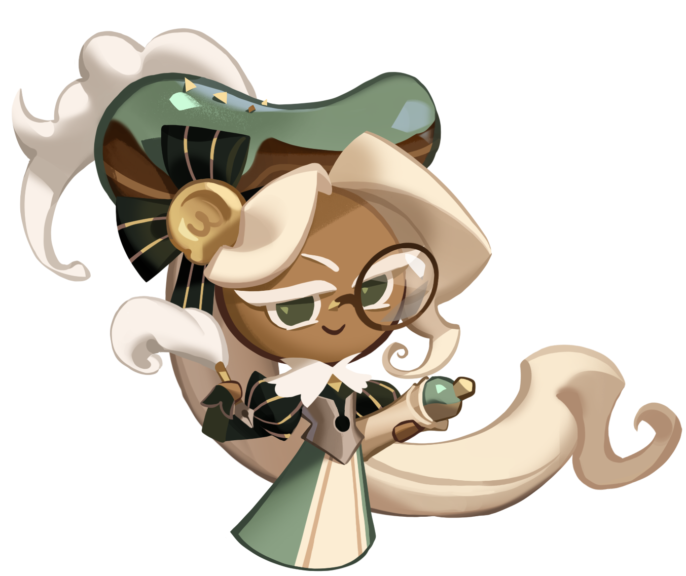

Los mejores equipos
Mintchoco

Como Mintchoco cura segun su ataque asi que se puede colocar bastante ataque para que
cure mas auque lo que recomienda la comunidad es tener chispas de chocolate que baje el
tiempo de espara del ataque especial. Buils:


Almond Cookie

No dire solo que le conviene tener muchas chispas Buils:
Parfati

El metodo de curacion Parfati es como Mintchoco que cura segun el ataque pero es de poco a
poco lo que llega ser bastante bueno durante el combate pero unos disen que cura poco por segundo
pero este lo compensa dendo mucha defensa y resitencia al equipo pero a final de cuentas puede tener
las misma buils que Mintchoco. Buils:
Eclair
Como esta es una galleta muy resiente nose tiene de todo claro como funcioa pero de momento se tiene
un par de ideas Buils:
Cotton

La comunidad le a dado el mejor puestor tener varias combinaciones y utilidades segun tus gustos
si quieres que cure mas dale ataque, si quieres que las obejas duren mas para resibir mas daño,
o chispas de chocolate que redusen el tiempo de espera de sus habilidades Buils: